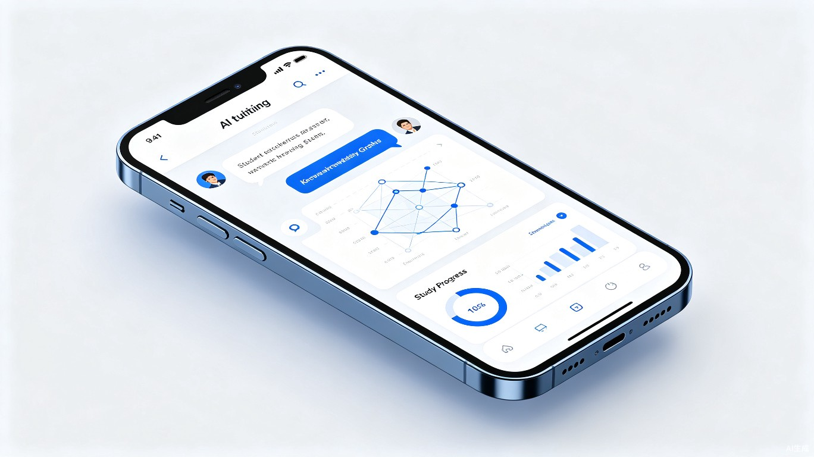

0基础跨考，专业知识和情绪价值都给你
私人定制、专业可选的AI伴学App
考研想要换专业，但0基础不知道从何下手。学习过程就像摸黑洗衣服，灯亮了才知道是否洗干净——但考试结果反馈太慢，一年只有一次。
我真的学会了吗？学的内容是对的吗？我的专业知识掌握程度够得上目标院校的要求吗？未知的担心在学习过程中反复拷打。
市面上考研机构要么是在职研究生赚外快、专业无保障，要么学员太多难以一对一。定制专人服务往往价格高昂，囊中羞涩的考生望而却步。
通用AI可以回答碎片化问题，但无法保证知识来源准确，更记不住你的学习进度、上次的错题。一个对话窗口，承载不了系统化的备考需求。
从入门到冲刺，每一个学习节点都有专业AI助教的精准陪伴
根据用户给定的参考书范围，AI精准拆解知识框架，输出结构化学习文档。以文学跨考为例，基于指定教材拆解章节逻辑、核心概念关系图谱，让0基础学生也能快速建立学科认知地图。
基于给定内容范围，智能延伸关联知识点。防止给定教材未包含新兴流派、专有名词来源解释不全等问题，确保知识视野的完整性和前沿性。
根据当日所学内容，自动匹配历年全国各院校真题，生成高频考点分析。清晰提示哪些内容以哪种题型、什么频率被考察，学习目标一目了然。
基于用户给定的真题，按要求答题范围输出答题框架。只给思路骨架，不给完整答案，有效防止懒于思考，培养独立答题能力。
用户提交自己的答案后，AI基于要求的参考范围进行专业批改，给出修改意见和优化方向，并生成AI参考答案供对照学习。
学完一本书后，通过逻辑串联的方式梳理全书知识点，构建完整的学科知识体系。从碎片到系统，从输入到内化。
六大功能形成完整的学习闭环，让跨考备考从碎片化走向系统化

跨考伴学助教是一款专为跨考生打造的移动端App。无论你是在图书馆、通勤路上还是睡前复习，都能随时打开App，获得专业、个性化的学习支持。
从效率提升到社会价值，跨考伴学助教致力于为每一位有梦想的考生创造平等的机会
通过六大功能闭环，将碎片化学习升级为系统化备考。AI助教7×24小时在线，随时解答专业问题、检验学习成果，大幅缩短知识入门周期，让跨考生用更短时间达到同等专业水平。
降低高质量专业辅导的获取门槛，让经济条件有限的考生也能获得"一对一"级别的学习支持。考研是许多人实现专业转型、改变命运的重要通道。通过AI技术赋能教育普惠，促进教育公平，助力更多有志者实现专业转型梦想。
覆盖一战、二战及在职跨考人群，无论你处于什么阶段，都能找到适合自己的学习节奏
时间充裕但毫无基础，需要从0搭建知识体系。App提供系统化的入门路径，让跨考不再盲目。
时间碎片化、精力有限。App支持随时随地的短时高效学习，通勤路上也能锁考点、看框架。
有过一次经验但成绩不理想。App基于历史错题和薄弱点，智能生成针对性强化方案。
0基础不可怕，可怕的是独自摸索。跨考伴学助教——知识和情绪价值，都给你。